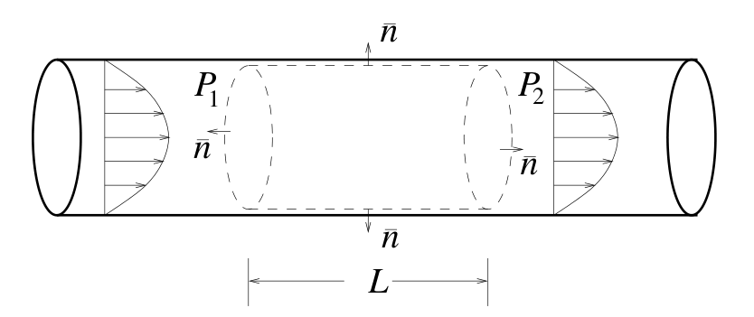
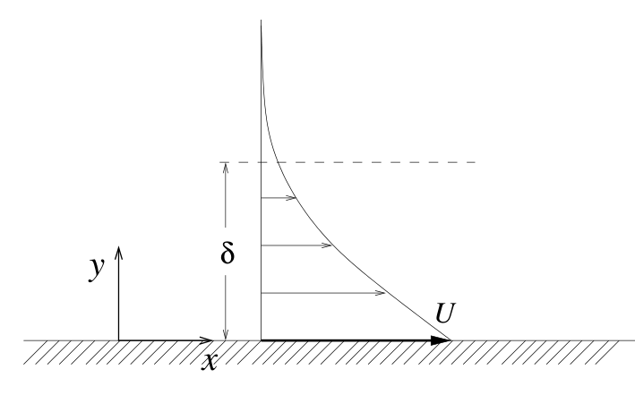
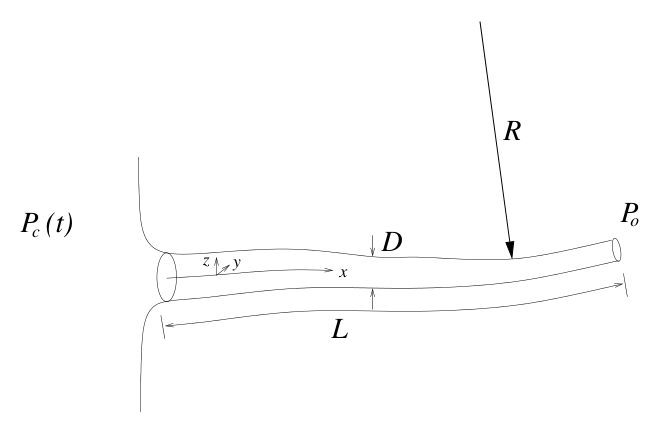
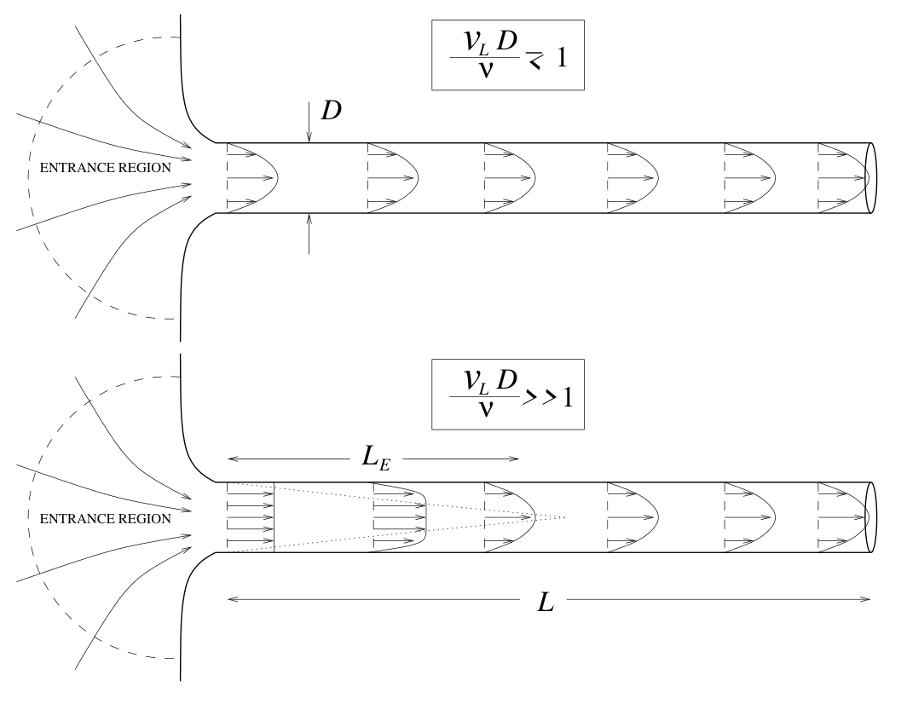
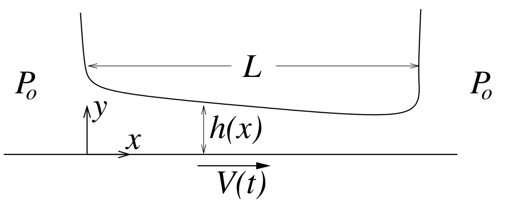
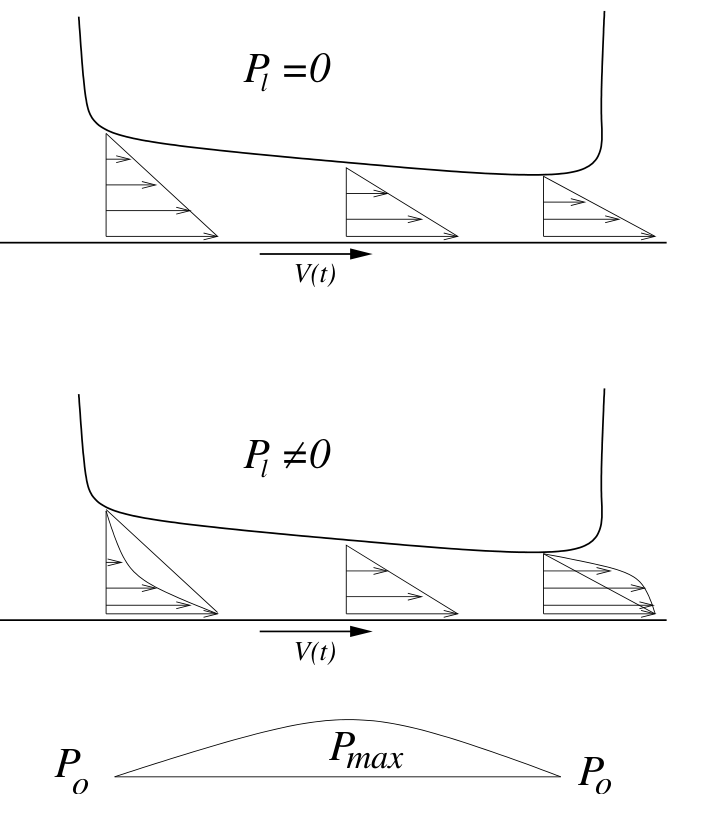

Viscous Flows
Central idea. In slender configurations (pipes, channels, thin films) the Navier-Stokes equations lose their nonlinear convective terms and reduce to a local balance between the pressure gradient and the viscous force, $0 = -\partial P/\partial x + \mu\,\partial^2 v_x/\partial y^2$. Strictly unidirectional flows (Couette, Poiseuille, Rayleigh, Stokes) solve this exactly; slowly varying sections and lubrication films solve it section by section, with the volume flux $Q$ fixed by continuity. The Reynolds number alone does not decide whether viscosity dominates: what matters is $(\rho v D/\mu)(D/L)$ and the viscous time $D^2/\nu$ against the time of variation of the data.
1. Strictly Unidirectional Liquid Motion
Formulation
Consider a liquid of constant viscosity whose streamlines are all parallel to $x$ (for example, an infinitely long pipe of constant section). With transverse coordinates $y$, $z$, the velocity is $\bar{v} = v_x\bar{e}_x$ and continuity $\nabla\cdot\bar{v} = 0$ gives $\partial v_x/\partial x = 0$, hence (Notes.pdf, Eq. 7.1)
Gravity enters through the reduced pressure $P = p + \rho g Z$, with $Z$ the vertical distance measured against the gravity vector ($Z$ is not the transverse coordinate $z$ in general). With $\partial v_x/\partial x = v_y = v_z = 0$ the $x$ component of the momentum equation is (Notes.pdf, Eq. 7.2)
and the transverse components give (Notes.pdf, Eq. 7.3)
Every convective term vanished (each contains $\partial/\partial x$ of $v_x$, or $v_y$, or $v_z$), so the problem is linear in $v_x$. By (7.3) the reduced pressure does not depend on $y$ or $z$, so the loss of reduced pressure per unit length (Notes.pdf, Eq. 7.4)
is at most a function of $x$ and $t$. It is in fact independent of $x$: differentiating (7.2) with respect to $x$, with $\partial v_x/\partial x = 0$, gives $\partial P_l/\partial x = 0$. So $P_l(t)$ follows from the reduced pressures at two sections $x_1$ and $x_2$ (Notes.pdf, Eq. 7.5):
The problem to integrate
For strictly unidirectional flow the problem reduces to the parabolic equation (Notes.pdf, Eq. 7.6)
with the initial condition $v_x = v_i(y, z)$ at $t = 0$ and the no-slip condition $v_x = v_c(y, z, t)$ on the section $C(y, z) = 0$, which moves with velocity $v_c$ if the confining cylinder moves. For axisymmetric problems the transverse laplacian is written in cylindrical coordinates (Notes.pdf, Eq. 7.7):
When $P_l$ is not given, it is found as part of the solution from some other known quantity, for example the volume flux.
The normal $\bar{n}$ of a wall points from the wall into the liquid, so $\bar{\bar{\tau}}'\cdot\bar{n}$ is the force per unit surface that the liquid exerts on the wall (this is the convention of the notes: for the upper wall of a channel, $\bar{n} = -\bar{e}_y$).
2. Steady Flows: Couette, Poiseuille and the Circular Pipe
Couette flow between two plane walls
A two-dimensional channel of height $h$, with no pressure gradient and the upper wall moving with velocity $V$ in a frame fixed to the lower wall (Notes.pdf, Eq. 7.8):
Integrating twice: $dv_x/dy = A$, $v_x = Ay + B$; $v_x(0) = 0$ gives $B = 0$; $v_x(h) = V$ gives $A = V/h$ (Notes.pdf, Eq. 7.9):
Quantities derived from the profile (Notes.pdf, p. 74), with Barrow's rule for the flux:
On the upper wall, $\bar{n} = -\bar{e}_y$, so $\bar{\bar{\tau}}'\cdot\bar{n} = -(\mu V/h)\bar{e}_x$: the liquid pulls the wall back. The power per unit surface needed to keep it moving is force times velocity, $(\mu V/h)\,V = \mu V^2/h$. It is converted into internal energy by viscous dissipation, $\phi_v = \mu(\partial v_x/\partial y)^2 = \mu V^2/h^2$, whose integral across the channel is
the same as the power supplied: all the work done on the wall is dissipated.
Poiseuille flow between two plane walls
Both walls at rest and a constant $P_l$ (Notes.pdf, Eq. 7.10):
Integrating twice: $\mu\,dv_x/dy = -P_l y + C_1$ and $\mu v_x = -P_l y^2/2 + C_1 y + C_2$. The condition at $y = 0$ gives $C_2 = 0$; the condition at $y = h$ gives $0 = -P_l h^2/2 + C_1 h$, so $C_1 = P_l h/2$ (Notes.pdf, Eq. 7.11):
Volume flux (Notes.pdf, p. 75):
The wall stress is $\mu\,\partial v_x/\partial y = \mu\cdot P_l h/(2\mu) = P_l h/2$ at $y = 0$, so $\bar{\bar{\tau}}'\cdot\bar{n} = (P_l h/2)\bar{e}_x$ on each wall (the flow drags the walls forward).
Superposition
The problem is linear in $v_x$, so a pressure gradient and a moving wall add. For the upper wall moving with $V\bar{e}_x$ (Notes.pdf, Eq. 7.12):
with the flux $Q = Vh/2 + P_l h^3/(12\mu)$ and the wall stresses obtained also by addition.
Steady flow in a circular pipe
For a pipe of radius $a$ and constant $P_l$ (Notes.pdf, Eq. 7.13):
Multiplying by $r/\mu$ and integrating: $r\,dv_x/dr = -P_l r^2/(2\mu) + C_1$. The symmetry condition at $r = 0$ (finite slope) gives $C_1 = 0$, so $dv_x/dr = -P_l r/(2\mu)$ and $v_x = -P_l r^2/(4\mu) + C_2$. The wall condition $v_x(a) = 0$ gives $C_2 = P_l a^2/(4\mu)$ (Notes.pdf, Eq. 7.14):
the Poiseuille parabola. The flux (Notes.pdf, Eq. 7.15) follows from Barrow's rule:
and the wall stress (Notes.pdf, Eq. 7.16):
Momentum balance on a control volume
The balance of Fig. 7.1 shows where (7.16) comes from. For the control volume $\Sigma_c$ of length $L$, Gauss's formula rewrites gravity as a surface integral, $\int_{V_c}\rho\bar{g}\,dV = -\int_{\Sigma_c}\rho g Z\bar{n}\,d\sigma$, which added to the pressure force gives $-\int P\bar{n}\,d\sigma$ with $P = p + \rho g Z$ (Notes.pdf, Eq. 7.17):

The left side is zero because the velocity profile does not change along the pipe: the momentum leaving through the right end equals the one entering on the left. The pressure term is $(P_1 - P_2)\pi a^2\bar{e}_x$ and the shear term $-\tau_p\,2\pi a L\,\bar{e}_x$, so
which is (7.16) with $P_l = (P_1 - P_2)/L$: the pressure drop is balanced by the friction on the wall.
3. Unsteady Flows: Rayleigh and Stokes
Rayleigh's problem: the suddenly accelerated wall
A semi-infinite liquid is bounded by a plane wall at rest for $t < 0$ that moves with constant velocity $V$ for $t > 0$. Since $\partial P/\partial y = 0$, the reduced pressure equals its value far from the wall, so $P_l = 0$ and (Notes.pdf, Eq. 7.19)

In terms of $\tilde{v} = v_x/V$ (Notes.pdf, Eq. 7.20):
Self-similarity from the Π theorem. The problem has no length or time scale of its own, so the solution is a function of $y$ and $t$ through one variable. The unknown depends on $(\rho, \mu, y, t)$ (Notes.pdf, Eq. 7.21):
Three of the four have independent dimensions, so $n - k = 1$; with $(\rho, \mu, t)$ as the independent set (Notes.pdf, Eq. 7.22):
Order-of-magnitude reading. The condition at the wall gives the velocity scale $V$ but not the thickness $\delta$ of the layer of moving liquid. Balancing the acceleration $O(\rho\,\partial v_x/\partial t)\sim\rho V/t$ with the viscous stress $O(\mu\,\partial^2 v_x/\partial y^2)\sim\mu V/\delta^2$ gives $\delta(t) = \sqrt{\nu t}$, and the same balance defines the viscous time, the time for shear stresses to set in motion a fluid particle at a distance $\delta$ from the wall (Notes.pdf, Eq. 7.23):
Solution. With $\eta = y/\sqrt{\nu t}$ and the chain rule: $\partial\eta/\partial t = -\eta/(2t)$ and $\partial\eta/\partial y = 1/\sqrt{\nu t}$, so
Substituting in (7.20) and using $\mu = \rho\nu$: $-\rho\,\eta\tilde{v}'/(2t) = \rho\,\tilde{v}''/t$, that is (Notes.pdf, Eq. 7.24)
The equation is first order in $\tilde{v}'$: $\tilde{v}''/\tilde{v}' = -\eta/2$ gives $\tilde{v}' = C\,e^{-\eta^2/4}$. Integrating between $0$ and $\eta$ (Barrow) with $\tilde{v}(0) = 1$, and fixing $C$ with $\tilde{v}(\infty) = 0$ (Notes.pdf, Eq. 7.25):
with $\operatorname{erfc}(x) = (2/\sqrt{\pi})\int_x^\infty e^{-z^2}dz$ (the substitution $\bar{\eta} = 2z$ gives $\int_0^\infty e^{-\bar{\eta}^2/4}d\bar{\eta} = 2\cdot\sqrt{\pi}/2 = \sqrt{\pi}$).
The notes leave two derived quantities to the reader. With $\tilde{v}'(0) = -1/\sqrt{\pi}$ (computed from $\tilde{v}' = -e^{-\eta^2/4}/\sqrt{\pi}$) and $\int_0^\infty\operatorname{erfc}(x)\,dx = 1/\sqrt{\pi}$:
(computed here; the stress on the wall decays as $t^{-1/2}$ and the flux grows as $t^{1/2}$, as $\delta\sim\sqrt{\nu t}$ requires).
Stokes flow near a wall
A plane wall oscillating with velocity $V\cos\omega t$ in an unbounded liquid (Notes.pdf, Eq. 7.26):
No initial condition is needed: the sought solution is periodic. The wall velocity changes sign, so appreciable motion is found only in a layer of thickness $\delta$; balancing $\rho V/\omega^{-1}\sim\mu V/\delta^2$ (Notes.pdf, Eq. 7.27):
Solution. Introduce a complex $v^*$ with $v_x = \operatorname{Re}(v^*)$ (Notes.pdf, Eq. 7.28):
and look for $v^* = V e^{\imath\omega t} f(y)$. Substitution gives (Notes.pdf, Eq. 7.29)
The characteristic equation $\nu s^2 = \imath\omega$ has $s = \pm\sqrt{\imath\omega/\nu}$, and $\sqrt{\imath} = (1 + \imath)/\sqrt{2}$, so $s = \pm\frac{1 + \imath}{\sqrt{2}}\sqrt{\omega/\nu}$. The decaying root and $f(0) = 1$ give (Notes.pdf, Eq. 7.30)
The real part of $V e^{\imath\omega t}f$ is (Notes.pdf, Eq. 7.31)
a wave that enters the liquid with the velocity $\sqrt{2\nu\omega}$ (phase $\omega t - ky$ constant, with $k = 1/\sqrt{2\nu/\omega}$, gives $\omega/k = \sqrt{2\nu\omega}$) and whose amplitude is attenuated over a distance of order $\sqrt{\nu/\omega}$.
Oscillating wall of a channel
A channel of height $h$ with the lower wall moving with $V\cos\omega t$ and the upper wall at rest (Notes.pdf, Eq. 7.32):
The ratio of acceleration to viscous stress is $h^2\omega/\nu$ (order of magnitude $\rho V\omega\,/\,(\mu V/h^2) = h^2\omega/\nu$). Its extreme values simplify the problem:
- $h^2\omega/\nu\ll 1$ (low frequency). The unsteady term is negligible (Notes.pdf, Eq. 7.33):
with solution (Notes.pdf, Eq. 7.34)
the steady Couette profile (7.9) for the instantaneous wall velocity. The condition is equivalent to (Notes.pdf, Eq. 7.35)
the viscous time across the channel is much shorter than the time of variation of the wall velocity, so the profile adjusts almost instantaneously: the solution is quasi-steady (transient effects negligible in the equation, yet the result varies slowly with time).
- $h^2\omega/\nu\gg 1$ (high frequency). The channel is much wider than the penetration length $(\nu/\omega)^{1/2}$: the liquid is stagnant ($\partial v_x/\partial t = 0$ is compatible with the upper wall, giving $v_x = 0$) except in a thin layer of thickness $(\nu/\omega)^{1/2}$ at the lower wall, where the solution is (7.31), independent of $h$.
- $h^2\omega/\nu\sim 1$. Acceleration and viscous stress are comparable everywhere; the exact solution follows the complex-function procedure above, with both exponentials of $f$ kept.
4. Slender Flows Dominated by Viscosity
The orders of magnitude
Consider a pipe of slowly varying diameter, of characteristic value $D$, with variations occurring over distances $L\gg D$, weakly curved (curvature radii $R\gg D$), discharging a container at reduced pressure $P_c(t)$ (Fig. 7.3). With the distance $x$ along the centre line and transverse coordinates $y$, $z$, the conservation equations reduce, with relative errors $O(D/R)$, to the Cartesian ones, with the order of magnitude of each term below it (Notes.pdf, Eqs. 7.36-7.38).

Here $v_L$ and $v_T$ are the characteristic longitudinal and transverse velocities, $\Delta_L P$ the pressure difference along the pipe (of order $P_c - P_o$), $\Delta_T P$ the pressure variation across a section and $t_o$ the time over which the boundary conditions change (for a feeding pressure, the time for $P_c$ to change by a relative amount of order unity). The $z$ component would give the same discussion as (7.38).
Consequences of $L\gg D$. From continuity, $v_L/L\sim v_T/D$ (Notes.pdf, Eq. 7.39):
so all streamlines are aligned. In the viscous terms the longitudinal derivatives are smaller than the transverse ones by $(D/L)^2$ and are neglected.
Conditions for viscosity to dominate. The viscous force must exceed the local acceleration (Notes.pdf, Eq. 7.40) and the convective acceleration (Notes.pdf, Eq. 7.41):
The first says that the viscous time across the pipe, $D^2/\nu$, is much shorter than the time of variation of the data (as in (7.35)), so the flow is quasi-steady. The second says that the residence time $L/v_L$ is much longer than the local viscous time $D^2/\nu$. It involves the product of the Reynolds number and the slenderness $D/L$: viscosity dominates whatever the Reynolds number, if the pipe is slender enough.
The reduced equations
If (7.40) and (7.41) hold, (7.37) and (7.38) reduce at first order to (Notes.pdf, Eqs. 7.42-7.43)
and balancing the orders gives (Notes.pdf, Eq. 7.44, and $\Delta_T P\sim\mu v_T/D$)
The ratio of the transverse to the longitudinal pressure variation is (Notes.pdf, Eq. 7.45)
a result of the slenderness that holds whether or not viscosity dominates: if the streamlines are aligned the transverse pressure variations must be very small, otherwise they would give a transverse acceleration that destroys the alignment. So $P = P(x, t)$ is uniform across each section, the transverse momentum equations are not needed at leading order, and the problem is (Notes.pdf, Eq. 7.46)
with $P(x, t)$, for pipe and channel flows.
Pipe of circular section and variable radius $a(x)$
In cylindrical coordinates (Notes.pdf, Eq. 7.47):
At each section $x$ and instant $t$, with $v_x = 0$ at $r = a(x)$ and $\partial v_x/\partial r = 0$ at $r = 0$, the integration is the one of (7.13), with the local radius and the local $P_l(x, t) = -\partial P/\partial x$ (Notes.pdf, Eq. 7.48):
and the flux, as in (7.15) (Notes.pdf, Eq. 7.49):
Closing the problem. $Q$ does not depend on $x$ (incompressible liquid), so (7.49) gives $\partial P/\partial x = -8\mu Q/(\pi a^4)$. Integrating from the entrance section $x = 0$, where $P = P_e(t)$, to $x$ (Notes.pdf, Eq. 7.50):
and imposing $P = P_o$ at the outlet $x = L$, where the liquid discharges as a jet with quasi-parallel streamlines (Notes.pdf, Eq. 7.51):
If $a(x)$ and $P_e(t)$ are known, (7.51) gives $Q$, (7.50) gives $P(x, t)$, (7.49) gives $P_l$ and (7.48) the velocity profile at each section. For constant $a$, $\int_0^L dx/a^4 = L/a^4$, so $Q = \pi a^4(P_e - P_o)/(8\mu L)$ and $P_l = (P_e - P_o)/L$ is uniform. The entrance pressure $P_e$ is not known a priori; Section 5 shows that $P_e = P_c$ at first order.
5. The Entrance Region
At the entrance the liquid approaches the pipe from all directions: there is a non-slender region of size of order $D$ inside the container (by mass conservation the velocity decays with the distance $\ell$ to the pipe as $v\sim(D/\ell)^2 v_L$). There the full equations apply (Notes.pdf, Eqs. 7.52-7.53):
where $\Delta_E P$ is the pressure loss across the entrance region. If (7.40) and (7.41) hold, the flow in this region is quasi-steady too, since the ratio of local to convective acceleration is $(D^2/\nu)/t_o\ll 1$. The importance of convection in the entrance region is measured by the Reynolds number (Notes.pdf, Eq. 7.54):
Since (7.41) can hold for small and for large $\rho v_L D/\mu$, both cases appear (Fig. 7.4).

Small Reynolds number
For $\rho v_L D/\mu\lesssim 1$ the momentum equation is $0 = -\nabla P + \mu\nabla^2\bar{v}$ and the Poiseuille profile is reached at distances of order $D$. The pressure loss is of order (Notes.pdf, Eq. 7.55)
and compared with the loss along the pipe, (7.44) (Notes.pdf, Eq. 7.56):
so it can be neglected: $P_e = P_c$ in (7.50)-(7.51), with errors of order $D/L$.
Large Reynolds number
For $\rho v_L D/\mu\gg 1$ viscosity is negligible at distances of order $D$ from the entrance and the momentum equation $\rho\bar{v}\cdot\nabla\bar{v} = -\nabla P$ gives Bernoulli's equation along each streamline (Notes.pdf, Eq. 7.57):
Once the streamlines are aligned at the entrance, the pressure is the same on all of them, so $|\bar{v}|(0) = \sqrt{2[P_c - P(0)]/\rho}$: a uniform profile, and the pressure drop from the container is (Notes.pdf, Eq. 7.58)
This profile does not satisfy no-slip: a thin boundary layer where viscosity matters grows downstream until it fills the pipe, at a distance $L_E$ from the entrance, after which the Poiseuille profile (7.48) holds up to $x = L$.
Estimate of $L_E$. In the transition region the three terms are comparable (Notes.pdf, Eq. 7.59):
Equating $\rho v_L^2/L_E$ with $\mu v_L/D^2$ and with $\Delta_E P/L_E$ gives (Notes.pdf, Eqs. 7.60-7.61):
Dimensional check of (7.60): $\rho v_L D^2/\mu = (ML^{-3})(LT^{-1})(L^2)/(ML^{-1}T^{-1}) = L$. Compared with the length of the pipe (Notes.pdf, Eq. 7.62)
which is very small by (7.41). The loss $\Delta_E P$ is of the order of (7.58), and against the loss along the pipe (Notes.pdf, Eq. 7.63):
so $P_e = P_c$ also holds for large Reynolds numbers. The relative error of using it is of order $D/L$ if $\rho v_L D/\mu\lesssim 1$ and of order $(\rho v_L D/\mu)(D/L)$ if $\rho v_L D/\mu\gg 1$. The localized losses of joints, contractions, expansions and elbows are comparable to those of the entrance region, so they are negligible too whenever $L\gg D$ and (7.41) hold (Notes.pdf, p. 86).
6. Hydrodynamic Lubrication: the Wedge Effect
Two solids in relative motion in contact produce friction that dissipates a large amount of energy and heats the materials; a thin layer of lubricant separates them. The shear stresses on the solids are much smaller than the pressure differences induced in the film, which keep the surfaces apart (fluid bearings, hydroplaning of tires, synovial fluid in joints).

Equations of the planar bearing
A bearing of length $L$ moves with velocity $V(t)$ relative to a horizontal wall; between them a film of thickness $h(x)$ is at $P = P_o$ on both sides (Fig. 7.5). In a frame moving with the bearing, with $x$ the distance from the entrance of the channel and $y$ the distance to the wall (Notes.pdf, Eqs. 7.64-7.66):
with $V_c$, $h_c$ the characteristic values of $V(t)$ and $h(x)$ and $t_o$ the time of variation of $V(t)$. If the channel is slender ($h_c\ll L$) and (Notes.pdf, Eqs. 7.67-7.68)
(the counterparts of (7.40) and (7.41)), the flow is quasi-steady and dominated by viscosity with negligible transverse pressure variations, $P = P(x, t)$, and
with $v_x = V(t)$ at $y = 0$ and $v_x = 0$ at $y = h$. In this frame the lower wall moves with $V$ and the bearing is at rest. Integrating as for (7.11) and adding the Couette part (Notes.pdf, Eq. 7.70):
with the flux per unit width (Notes.pdf, Eq. 7.71), $P_l = -\partial P/\partial x$:
The wedge effect
The flux depends on $t$ only. Integrating (7.64) across a section, with $v_y(y=h) = v_y(y=0) = 0$ in the frame of the bearing (Notes.pdf, Eq. 7.72):
The flux is the sum of the Poiseuille part $P_l h^3/(12\mu)$ and the Couette part $Vh/2$, which grows with the local height. If $P_l$ were zero, $Q = V h(x)/2$ would change along the film, violating (7.72). Therefore, although $P = P_o$ at both ends, pressure variations must appear within the film whenever $h$ varies with $x$, so that $Q$ stays uniform (Fig. 7.6).

For a film whose thickness decreases (a converging channel) there are overpressures $P - P_o > 0$, with a maximum at $x_{max}$ where $P_l = 0$: for $x < x_{max}$, $P_l < 0$ and the reverse Poiseuille flow reduces the flux below the Couette one; for $x > x_{max}$, $P_l > 0$ adds a positive Poiseuille flow.
Pressure distribution
Solving (7.71) for $P_l$ and using $\partial P/\partial x = -P_l$ (Notes.pdf, Eq. 7.73):
(from $P_l = 12\mu(Q - Vh/2)/h^3 = 12\mu Q/h^3 - 6\mu V/h^2$). The pressure variations near the entrance are neglected, so $P = P_o$ at $x = 0$, and integrating between $0$ and $x$ (Notes.pdf, Eq. 7.74):
Imposing $P = P_o$ at $x = L$ gives $6\mu V\int_0^L h^{-2}dx = 12\mu Q\int_0^L h^{-3}dx$, that is (Notes.pdf, Eq. 7.75)
which closes the problem: $Q(t)$ from the instantaneous $V(t)$, then $P$ from (7.74), $P_l$ from (7.73) and the velocity (7.70) at each section.
For $h(x) = h_i - s\,x$ with $s = (h_i - h_o)/L$ (entrance thickness $h_i$, exit thickness $h_o$): $\int_0^L h^{-2}dx = L/(h_ih_o)$ and $\int_0^L h^{-3}dx = (h_i + h_o)L/(2h_i^2h_o^2)$, so (7.75) gives $Q = V h_ih_o/(h_i + h_o)$ and (7.74) gives $P - P_o = 6\mu V\,x\,(h - h_o)/\left[(h_i + h_o)h^2\right]$, zero at both ends and positive in between for $h_i > h_o$. Check: for $h_i = h_o = h$, $Q = Vh/2$ and $P = P_o$ everywhere.
Forces on the wall
The force on the bottom wall (Notes.pdf, Eq. 7.76):
By (7.69) the overpressures are of order $\mu V_c L/h_c^2$, so the normal force is $\int_0^L(P - P_o)dx\sim\mu V_c L^2/h_c^2$, while the tangential viscous force is $\int_0^L\mu(\partial v_x/\partial y)_{y=0}dx\sim\mu V_c L/h_c$. This is what makes hydrodynamic lubrication useful: the pressure forces that keep the surfaces apart are a factor $L/h_c$ larger than the viscous forces that oppose the motion.
7. Practical Formulary of Topic 7
Dimensions and scales
| Quantity | Symbol | Dimensions |
|---|---|---|
| Kinematic viscosity | $\nu = \mu/\rho$ | $L^2T^{-1}$ |
| Reduced pressure | $P = p + \rho g Z$ | $ML^{-1}T^{-2}$ |
| Reduced-pressure loss per unit length | $P_l = -\partial P/\partial x$ | $ML^{-2}T^{-2}$ |
| Volume flux (channel, per unit width) | $Q$ | $L^2T^{-1}$ |
| Volume flux (pipe) | $Q$ | $L^3T^{-1}$ |
| Wall shear stress | $\tau$ | $ML^{-1}T^{-2}$ |
| Viscous time | $t_v = \delta^2/\nu$ | $T$ |
Steady solutions
| Situation | Velocity | Flux | Wall stress | Source |
|---|---|---|---|---|
| Couette ($P_l = 0$, upper wall at $V$) | $V y/h$ | $V h/2$ | $\mu V/h$ | (7.9) |
| Plane Poiseuille (walls at rest) | $\dfrac{P_l}{2\mu}y(h - y)$ | $\dfrac{P_l h^3}{12\mu}$ | $\dfrac{P_l h}{2}$ | (7.11) |
| Couette + Poiseuille | $V\dfrac{y}{h} + \dfrac{P_l}{2\mu}y(h - y)$ | $\dfrac{V h}{2} + \dfrac{P_l h^3}{12\mu}$ | by addition | (7.12) |
| Circular pipe | $\dfrac{P_l}{4\mu}(a^2 - r^2)$ | $\dfrac{\pi P_l a^4}{8\mu}$ | $\dfrac{P_l a}{2}$ | (7.14)-(7.16) |
| Pipe of variable radius | $\dfrac{P_l}{4\mu}(a^2 - r^2)$ with local $a(x)$ | $\dfrac{\pi}{8\mu}\dfrac{P_e - P_o}{\int_0^L dx/a^4}$ | (7.48)-(7.51) | |
| Lubrication film | $\dfrac{P_l}{2\mu}y(h - y) + V\dfrac{h - y}{h}$ | $\dfrac{V\int h^{-2}dx}{2\int h^{-3}dx}$ | (7.70)-(7.75) |
Unsteady solutions
| Situation | Result | Source |
|---|---|---|
| Rayleigh (wall suddenly at $V$) | $v_x/V = \operatorname{erfc}\left(y/(2\sqrt{\nu t})\right)$, $\delta = \sqrt{\nu t}$ | (7.22)-(7.25) |
| Stokes (wall $V\cos\omega t$) | $v_x = V e^{-y/\sqrt{2\nu/\omega}}\cos\left(\omega t - y/\sqrt{2\nu/\omega}\right)$, $\delta = \sqrt{\nu/\omega}$ | (7.27)-(7.31) |
| Channel, $h^2\omega/\nu\ll 1$ | $V\cos(\omega t)(h - y)/h$ (quasi-steady Couette) | (7.34) |
| Channel, $h^2\omega/\nu\gg 1$ | stagnant except a layer $\sqrt{\nu/\omega}$ at the oscillating wall | Section 3 |
Criteria
| Question | Criterion | Source |
|---|---|---|
| Unsteady term negligible (quasi-steady) | $\dfrac{D^2/\nu}{t_o}\ll 1$ | (7.40), (7.67) |
| Convection negligible in a slender flow | $\dfrac{\rho v_L D}{\mu}\dfrac{D}{L}\ll 1$ | (7.41), (7.68) |
| Pressure uniform across a section | $\Delta_T P/\Delta_L P\sim D^2/L^2\ll 1$ | (7.45) |
| Entrance length at large Re | $L_E = \rho v_L D^2/\mu$; $L_E/L = (\rho v_L D/\mu)(D/L)$ | (7.60), (7.62) |
| Entrance losses | negligible against the pipe loss; $P_e = P_c$, error $O(D/L)$ | (7.56), (7.63) |
| Lubrication: normal against tangential force | $L/h_c$ | (7.76) |
Exam recipe
- Identify the geometry and the direction of motion. If the flow is strictly unidirectional, write (7.6) or (7.7); if the section varies slowly, check (7.40)-(7.41) and write (7.46).
- Simplify the Navier-Stokes equations term by term: continuity gives $\partial v_x/\partial x = 0$ or $Q$ uniform; the transverse components give $P = P(x, t)$; cross out every convective term.
- Integrate across the section with its boundary conditions: no slip at walls (moving or not), symmetry or regularity on the axis, and a free surface or interface condition where there is one. Write each integration with its constants.
- Fix $P_l$ or the flux. Either $P_l$ is given, or the flux is, or the pressure at two sections: use $Q = \int v_x\,dA$ to relate them. For a variable section, $Q$ is uniform and $P_l$ varies with $x$.
- Unsteady problems: look for a similarity variable when there is no length scale ($y/\sqrt{\nu t}$); for a periodic forcing use a complex function; otherwise compare $h^2\omega/\nu$ or $t_o\nu/D^2$ with one.
- Forces and power: shear stress from $\mu\,\partial v_x/\partial y$ at the wall with the normal from the wall into the liquid; the viscous dissipation $\mu(\partial v_x/\partial y)^2$ integrated across the channel must equal the power input.
- Checks: dimensions of the result, the limits ($h\to 0$, $V\to 0$, $P_l\to 0$), and the criteria (7.40)-(7.41) evaluated with the numbers.